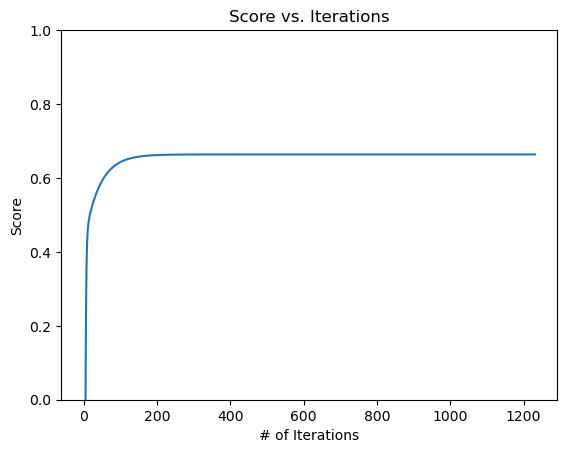

import numpy as np
import pandas as pd
import seaborn as sns
from matplotlib import pyplot as plt
from sklearn.datasets import make_blobs
from linearRegression import LinearRegressionOverview of Linear Regression
Linear regresion predicts a dependent value based on explanatory variables. In a machine learning context, we will predict a number using a variety of features.
Least-Squares Linear Regression
Since we have a linear model, our predictions will be linear: \(\hat{y}_i = \langle \mathbf{w}, \mathbf{x}_i \rangle\)
The loss function we will use for our implementation of linear regression is the squared loss: \(\ell(\hat{y}, y) = (\hat{y} - y)^2\)
To obtain our desired parameter vector, we want to minimize the emprirical risk of our training model as shown below:
\[\begin{aligned} \hat{\mathbf{w}} &= \mathop{\mathrm{arg\,min}}_{\mathbf{w}} \; L(\mathbf{w}) \\ &= \sum_{i = 1}^n \ell(\hat{y}_i, y_i) \\ &= \mathop{\mathrm{arg\,min}}_{\mathbf{w}} \sum_{i = 1}^n \left(\langle \mathbf{w}, \mathbf{x}_i \rangle - y_i \right)^2\;. \end{aligned}\]The equation takes the following form in matrix-vector notation:
\[\begin{aligned} \hat{\mathbf{w}} = \mathop{\mathrm{arg\,min}}_{\mathbf{w}} \; L(\mathbf{w}) = \mathop{\mathrm{arg\,min}}_{\mathbf{w}} \; \lVert \mathbf{X}\mathbf{w}- \mathbf{y} \rVert_2^2\;. \end{aligned}\]Since squared loss is a convex function, we are guaranteed to find any local minimum, which will be the global minimum by the definition of convexity.
By the definition of convexity, the minimum is located at the point where the empirical risk function’s gradient is 0.
Analytic Approach
If we set the
Gradient Descent Approach
Gradient is descent direction. Every iteration we calculate it and move in the descen
#This function helps modify our given feature array by adding column of 1's
def pad(X):
return np.append(X, np.ones((X.shape[0], 1)), 1)
#This function will create both testing and validation data
def LR_data(n_train = 100, n_val = 100, p_features = 1, noise = 1, w = None):
if w is None:
w = np.random.rand(p_features + 1) + .2
X_train = np.random.rand(n_train, p_features)
y_train = pad(X_train)@w + noise*np.random.randn(n_train)
X_val = np.random.rand(n_val, p_features)
y_val = pad(X_val)@w + noise*np.random.randn(n_val)
return X_train, y_train, X_val, y_val#choose # of samples and features
n_train = 100
n_val = 100
p_features = 1
#adjusts variability of the data
noise = 0.1
#create some data
X_train, y_train, X_val, y_val = LR_data(n_train, n_val, p_features, noise)weight = 0
score_history = []
lr = LinearRegression(weight, score_history)
lr.fit_gradient(X_train, y_train, alpha = 0.095, max_epochs = 2000)
print(lr.w)
lr.fit_analytic(X_train, y_train)
print(lr.w)[0.78541939 0.84879354]
[0.78541939 0.84879354]Same for both fit methods yayy
print(f"Training score = {lr.score(X_train, y_train).round(4)}")
print(f"Validation score = {lr.score(X_val, y_val).round(4)}")Training score = 0.858
Validation score = 0.8287# plot it
fig, axarr = plt.subplots(1, 2, sharex = True, sharey = True)
axarr[0].scatter(X_train, y_train)
axarr[1].scatter((X_val), y_val)
#pad for graphing the line hmmmm!!!; messes up the fit
def pad(X):
return np.append(X, np.ones((X.shape[0], 1)), 1)
axarr[0].plot(pad(X_train)[:,0], pad(X_train)@lr.w, color = "black") #[:,0]gives 1st column vs. print(X_train[0]) #gives 1st enxtry
axarr[1].plot(pad(X_val)[:,0], pad(X_val)@lr.w, color = "black")
labs = axarr[0].set(title = "Training", xlabel = "Feature (x)", ylabel = "Target (y)")
labs = axarr[1].set(title = "Validation", xlabel = "Feature (x)", ylabel = "Target (y)")
plt.tight_layout()
#fake data set 0,1 (101 points)
#linspace [newaxis]
#pad it
#use it to plot
#comparison of analy. and gradient; just print out and comment on itModel does a good job on both the training and validation data.
plt.plot(lr.score_history)
plt.ylim([0, 1])
labels = plt.gca().set(xlabel = "Iteration", ylabel = "Score")
# comment on this score and its formatExperiments
n_train = 100
n_val = 100
p_features = 1
noise = 0.5
#DO NOT FIT ON THE VAL, JUST USE THE SCORE ON VAL
train_score_hist = []
val_score_hist = []
# create some data
X_train, y_train, X_val, y_val = LR_data(n_train, n_val, p_features, noise)
#loop through
#i is the p_features
for i in range(n_train-1):
X_train, y_train, X_val, y_val = LR_data(n_train, n_val, i, noise) #create data
lr.fit_analytic(X_train, y_train) #fit
train_score_hist.append(lr.score(X_train, y_train)) #update model's training score
val_score_hist.append((lr.score(X_val, y_val))) #update model'svalidation score
#graph this beauty
num_steps = len(val_score_hist)
plt.plot(np.arange(num_steps) + 1, val_score_hist, label = "val")
num_steps = len(train_score_hist)
plt.plot(np.arange(num_steps) + 1, train_score_hist, label = "train")
labels = plt.gca().set(xlabel = "Iteration", ylabel = "Score")
legend = plt.legend()#commentLasso
#debrieffrom sklearn.linear_model import Lasso
L = Lasso(alpha = 0.001)
lasso_score_hist = []
p_features = n_train - 1
#i is the p_features
for i in range(1, (n_train-1)+20):
X_train, y_train, X_val, y_val = LR_data(n_train, n_val, i, noise) #behaving more normally
L.fit(X_train, y_train)
lasso_score_hist.append((L.score(X_val, y_val)))
num_steps = len(lasso_score_hist)
#graph this beauty
plt.plot(np.arange(num_steps) + 1, lasso_score_hist, label = "lasso")
labels = plt.gca().set(xlabel = "Iteration", ylabel = "Score")/Users/hedavamsolano/opt/anaconda3/envs/ml-0451/lib/python3.9/site-packages/sklearn/linear_model/_coordinate_descent.py:647: ConvergenceWarning: Objective did not converge. You might want to increase the number of iterations, check the scale of the features or consider increasing regularisation. Duality gap: 9.488e-02, tolerance: 4.877e-02
model = cd_fast.enet_coordinate_descent(
/Users/hedavamsolano/opt/anaconda3/envs/ml-0451/lib/python3.9/site-packages/sklearn/linear_model/_coordinate_descent.py:647: ConvergenceWarning: Objective did not converge. You might want to increase the number of iterations, check the scale of the features or consider increasing regularisation. Duality gap: 1.536e-01, tolerance: 6.615e-02
model = cd_fast.enet_coordinate_descent(
#commentOptional: blah
import pandas as pd
from sklearn.model_selection import train_test_split
bikeshare = pd.read_csv("https://philchodrow.github.io/PIC16A/datasets/Bike-Sharing-Dataset/day.csv")
bikeshare.head()| instant | dteday | season | yr | mnth | holiday | weekday | workingday | weathersit | temp | atemp | hum | windspeed | casual | registered | cnt | |
|---|---|---|---|---|---|---|---|---|---|---|---|---|---|---|---|---|
| 0 | 1 | 2011-01-01 | 1 | 0 | 1 | 0 | 6 | 0 | 2 | 0.344167 | 0.363625 | 0.805833 | 0.160446 | 331 | 654 | 985 |
| 1 | 2 | 2011-01-02 | 1 | 0 | 1 | 0 | 0 | 0 | 2 | 0.363478 | 0.353739 | 0.696087 | 0.248539 | 131 | 670 | 801 |
| 2 | 3 | 2011-01-03 | 1 | 0 | 1 | 0 | 1 | 1 | 1 | 0.196364 | 0.189405 | 0.437273 | 0.248309 | 120 | 1229 | 1349 |
| 3 | 4 | 2011-01-04 | 1 | 0 | 1 | 0 | 2 | 1 | 1 | 0.200000 | 0.212122 | 0.590435 | 0.160296 | 108 | 1454 | 1562 |
| 4 | 5 | 2011-01-05 | 1 | 0 | 1 | 0 | 3 | 1 | 1 | 0.226957 | 0.229270 | 0.436957 | 0.186900 | 82 | 1518 | 1600 |
# import datetime
fig, ax = plt.subplots(1, figsize = (7, 3))
ax.plot(pd.to_datetime(bikeshare['dteday']), bikeshare['casual'])
ax.set(xlabel = "Day", ylabel = "# of casual users")
l = plt.tight_layout()cols = ["casual",
"mnth",
"weathersit",
"workingday",
"yr",
"temp",
"hum",
"windspeed",
"holiday"]
bikeshare = bikeshare[cols]
bikeshare = pd.get_dummies(bikeshare, columns = ['mnth'], drop_first = "if_binary")
bikeshare| casual | weathersit | workingday | yr | temp | hum | windspeed | holiday | mnth_2 | mnth_3 | mnth_4 | mnth_5 | mnth_6 | mnth_7 | mnth_8 | mnth_9 | mnth_10 | mnth_11 | mnth_12 | |
|---|---|---|---|---|---|---|---|---|---|---|---|---|---|---|---|---|---|---|---|
| 0 | 331 | 2 | 0 | 0 | 0.344167 | 0.805833 | 0.160446 | 0 | 0 | 0 | 0 | 0 | 0 | 0 | 0 | 0 | 0 | 0 | 0 |
| 1 | 131 | 2 | 0 | 0 | 0.363478 | 0.696087 | 0.248539 | 0 | 0 | 0 | 0 | 0 | 0 | 0 | 0 | 0 | 0 | 0 | 0 |
| 2 | 120 | 1 | 1 | 0 | 0.196364 | 0.437273 | 0.248309 | 0 | 0 | 0 | 0 | 0 | 0 | 0 | 0 | 0 | 0 | 0 | 0 |
| 3 | 108 | 1 | 1 | 0 | 0.200000 | 0.590435 | 0.160296 | 0 | 0 | 0 | 0 | 0 | 0 | 0 | 0 | 0 | 0 | 0 | 0 |
| 4 | 82 | 1 | 1 | 0 | 0.226957 | 0.436957 | 0.186900 | 0 | 0 | 0 | 0 | 0 | 0 | 0 | 0 | 0 | 0 | 0 | 0 |
| ... | ... | ... | ... | ... | ... | ... | ... | ... | ... | ... | ... | ... | ... | ... | ... | ... | ... | ... | ... |
| 726 | 247 | 2 | 1 | 1 | 0.254167 | 0.652917 | 0.350133 | 0 | 0 | 0 | 0 | 0 | 0 | 0 | 0 | 0 | 0 | 0 | 1 |
| 727 | 644 | 2 | 1 | 1 | 0.253333 | 0.590000 | 0.155471 | 0 | 0 | 0 | 0 | 0 | 0 | 0 | 0 | 0 | 0 | 0 | 1 |
| 728 | 159 | 2 | 0 | 1 | 0.253333 | 0.752917 | 0.124383 | 0 | 0 | 0 | 0 | 0 | 0 | 0 | 0 | 0 | 0 | 0 | 1 |
| 729 | 364 | 1 | 0 | 1 | 0.255833 | 0.483333 | 0.350754 | 0 | 0 | 0 | 0 | 0 | 0 | 0 | 0 | 0 | 0 | 0 | 1 |
| 730 | 439 | 2 | 1 | 1 | 0.215833 | 0.577500 | 0.154846 | 0 | 0 | 0 | 0 | 0 | 0 | 0 | 0 | 0 | 0 | 0 | 1 |
731 rows × 19 columns
train, test = train_test_split(bikeshare, test_size = .2, shuffle = False)
X_train_bike = train.drop(["casual"], axis = 1)
y_train_bike = train["casual"]
X_test_bike = test.drop(["casual"], axis = 1)
y_test_bike = test["casual"]lr_bike = LinearRegression(weight, score_history)
lr_bike.fit_gradient(X_train_bike, y_train_bike, alpha = 0.095, max_epochs = 2000)
print(lr_bike.w)
print(lr_bike.score_history[-10:])
plt.plot(lr_bike.score_history)
plt.ylim([0, 1])
labels = plt.gca().set(xlabel = "Iteration", ylabel = "Score")[-1.25191790e+02 -7.89386722e+02 2.85816915e+02 1.45898411e+03
-3.76119347e+02 -9.59511991e+02 -2.34118970e+02 2.84441373e-01
3.73559040e+02 5.21961581e+02 5.48801456e+02 3.85722538e+02
2.59139107e+02 2.61659311e+02 3.89647869e+02 4.48576031e+02
2.61221557e+02 1.03399391e+02 8.19990202e+02]
[0.7308866382461963, 0.7308881146038799, 0.7308895885950909, 0.7308910602238288, 0.7308925294940853, 0.7308939964098453, 0.7308954609750855, 0.7308969231937752, 0.7308983830698765, 0.7308998406073439]
predictions = lr_bike.predict(X_train_bike)
actual = y_train_bike
difference = np.subtract(actual, predictions)
x_axis_1 = np.linspace(0, 3000, num = 3000)
x_axis_2 = np.linspace(0, 3000, num = 3000)
#length of predictions and actual are the same
x_axis_3 = np.linspace(0, actual.shape[0], actual.shape[0])
fig, axarr = plt.subplots(1, 3, figsize=(15,5), sharex = False, sharey = True)
#plot predicted vs. actual + paramater line
axarr[0].scatter(x = actual, y = predictions)
axarr[2].scatter(x = x_axis_3, y = difference)
#prediction vs. actual (superimposed)
axarr[1].scatter(x = x_axis_3, y = actual)
axarr[1].scatter(x = x_axis_3, y = predictions)
#plot the difference
axarr[0].plot(x_axis_1, x_axis_2, color = "black")
axarr[2].axhline(y = 0, color = 'black', linestyle = '-')
labs = axarr[0].set(title = "Predictions vs. Actual", xlabel = "# Actual Bikers", ylabel = "# Predicted Casual Bikers")
labs = axarr[1].set(title = "Prediciton vs. Actual (superimposed)", xlabel = "Days", ylabel = "# Casual Bikers") #add legend
labs = axarr[2].set(title = "Residual Plot", xlabel = "Days", ylabel = "actual-predicted # bikers")
#important features (ask why positive w means features are important)??
#positive means that there's a high correlation(?) between this feature and the ridership prediction
#like it makes the prediction be higher (duh)
sorted_ascend_params = np.argsort(lr_bike.w) #Returns the indices that would sort an array in ascending order
#top 5 most "useful" features
# for i in range(1,5):
# print(X_train_bike.columns[sorted_ascend_params[-i:]])
X_train_bike.columns[sorted_ascend_params[i]]'hum'(X_train_bike.columns).shape[0]18(lr_bike.w).shape[0] #take out last column because it's the bias? yea19print(sorted_ascend_params)[ 5 1 4 6 0 7 17 12 16 13 2 8 11 14 15 9 10 18 3]print((X_train_bike.columns))
print((lr_bike.w))Index(['weathersit', 'workingday', 'yr', 'temp', 'hum', 'windspeed', 'holiday',
'mnth_2', 'mnth_3', 'mnth_4', 'mnth_5', 'mnth_6', 'mnth_7', 'mnth_8',
'mnth_9', 'mnth_10', 'mnth_11', 'mnth_12'],
dtype='object')
[-1.25191790e+02 -7.89386722e+02 2.85816915e+02 1.45898411e+03
-3.76119347e+02 -9.59511991e+02 -2.34118970e+02 2.84441373e-01
3.73559040e+02 5.21961581e+02 5.48801456e+02 3.85722538e+02
2.59139107e+02 2.61659311e+02 3.89647869e+02 4.48576031e+02
2.61221557e+02 1.03399391e+02 8.19990202e+02]print(X_train_bike) weathersit workingday yr temp hum windspeed holiday \
0 2 0 0 0.344167 0.805833 0.160446 0
1 2 0 0 0.363478 0.696087 0.248539 0
2 1 1 0 0.196364 0.437273 0.248309 0
3 1 1 0 0.200000 0.590435 0.160296 0
4 1 1 0 0.226957 0.436957 0.186900 0
.. ... ... .. ... ... ... ...
579 1 1 1 0.752500 0.659583 0.129354 0
580 2 1 1 0.765833 0.642500 0.215792 0
581 1 0 1 0.793333 0.613333 0.257458 0
582 1 0 1 0.769167 0.652500 0.290421 0
583 2 1 1 0.752500 0.654167 0.129354 0
mnth_2 mnth_3 mnth_4 mnth_5 mnth_6 mnth_7 mnth_8 mnth_9 mnth_10 \
0 0 0 0 0 0 0 0 0 0
1 0 0 0 0 0 0 0 0 0
2 0 0 0 0 0 0 0 0 0
3 0 0 0 0 0 0 0 0 0
4 0 0 0 0 0 0 0 0 0
.. ... ... ... ... ... ... ... ... ...
579 0 0 0 0 0 0 1 0 0
580 0 0 0 0 0 0 1 0 0
581 0 0 0 0 0 0 1 0 0
582 0 0 0 0 0 0 1 0 0
583 0 0 0 0 0 0 1 0 0
mnth_11 mnth_12
0 0 0
1 0 0
2 0 0
3 0 0
4 0 0
.. ... ...
579 0 0
580 0 0
581 0 0
582 0 0
583 0 0
[584 rows x 18 columns]#use correlation https://datascience.stackexchange.com/questions/39137/how-can-i-check-the-correlation-between-features-and-target-variable